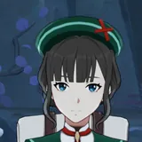
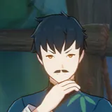
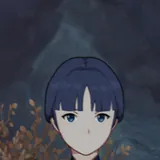
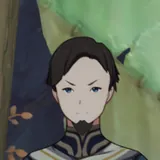
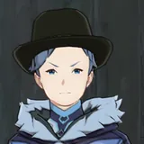

Chương Đệm · Màn I.1
Hành Trình Bên Trong Vực Đá Sâu
Nhiệm vụ thế giới bắt buộc để mở Chương Đệm · Màn II — Vực Đá Sâu, Liyue
Nhân vật xuất hiện
 Nhân vật chính · Nhà Lữ HànhLumineNhà Lữ Hành đến từ thế giới khác. Bị vị thần lạ mặt phong ấn và cướp mất người anh song sinh, cô bắt đầu hành trình đi tìm Bảy Vị Thần của Teyvat.
Nhân vật chính · Nhà Lữ HànhLumineNhà Lữ Hành đến từ thế giới khác. Bị vị thần lạ mặt phong ấn và cướp mất người anh song sinh, cô bắt đầu hành trình đi tìm Bảy Vị Thần của Teyvat. Bạn đồng hànhPaimonĐược Lumine cứu khỏi chết đuối hai tháng trước, Paimon tự nhận làm người dẫn đường cho cô. Hay ăn, hay nói, và rất ghét bị gọi là “thực phẩm dự trữ”.
Bạn đồng hànhPaimonĐược Lumine cứu khỏi chết đuối hai tháng trước, Paimon tự nhận làm người dẫn đường cho cô. Hay ăn, hay nói, và rất ghét bị gọi là “thực phẩm dự trữ”.
Nhà mạo hiểm · người thăm dò của đội thăm dòZhiqiongNhà mạo hiểm trẻ hâm mộ Lumine, gọi cô là “tiền bối”. Chịu trách nhiệm tìm đường và vẽ bản đồ cho đội thăm dò Vực Đá Sâu.
Chuyên viên Tổng Vụ ở Vực Đá SâuMuningPhụ trách doanh trại ở lối vào Vực Đá Sâu, cấp giấy phép cho những người muốn xuống hầm mỏ. Tính tình nóng nảy nhưng không phải người xấu.
Kỹ thuật viên an ninh của đội thăm dòJinwuSửa chữa và bảo trì thiết bị, đảm bảo an toàn cho cả đội. Luôn để mắt đến Zhiqiong.
Học giả đến từ SumeruKhediveNgười bỏ tiền thành lập và phụ trách đội thăm dò, nghiên cứu khoáng sản và sinh vật học.
Người bán “Thuốc Hảo Hán”ClitophoTừng theo Đạo Bảo Đoàn, được Lumine cứu khỏi lồng giam rồi gia nhập đội thăm dò, giúp chế tạo đạn pháo.
Các phần
- Phần 1Lần Đầu Khảo Sát Vực Đá Sâu
- Phần 2Lần Đầu Xuống Vực Gặp Chướng Khí
- Phần 3Quét Sạch Khoáng Tặc Kết Tân Duyên
- Phần 4Thiên Thạch Lơ Lửng Từng Mảnh Vụn
- Phần 5Màn Sương Ẩn Chứa Nhiều Hiểm Nguy
- Phần 6Cớ Sao Linh Thạch Rơi Nơi Này
Toàn bộ lời thoại được lấy từ bản tiếng Việt chính thức của trò chơi. Ở những đoạn người chơi được chọn câu trả lời, truyện chọn một lựa chọn duy nhất.